旅行
上海行记
前言
该怎么组织游记的文字呢？
该怎么组织游记的文字呢？以往总是按照时间顺序，事无巨细地记录下来，希望让以后的自己重读时，能重新捡起当时的回忆。
可若每次都这般去写，记录的琐事太多，相应地花费的时间也会较多。
因此，这次改换一种形式，用主题分类的方法，将游记重新组合一下，不知完成时会有怎样的效果。
正式提笔已是归来后的一个星期了，写的都算是回忆，而非当天鲜活的记叙了。
不过这样也好，沉淀下来的会是旅行的核心，那些不重要的，忘记也就罢了。
初到上海
精确到秒的上海地铁
从虹桥火车站出来，走不远就是地铁站。
记得不远处也来过这里——那是新年期间，我和掏粪一起到虹桥站，换乘航站线搭飞机去东北旅行。
话说，最近的旅行确实有点密集。不久后又将前往珠海，再顺便去香港、澳门转转。不知道那边又会有怎样的体验。
走得多，看得多，也算是一件好事。就像旅途最后一天，打出租车回民宿时，司机特别爱引用的一句话："读万卷书，不如行万里路。"
从虹桥到预订的普陀区民宿，大约有 45 分钟的路程——30 分钟地铁，15 分钟骑行。
毕竟是火车站，地铁上等车的人大多带着行李，我也成了其中之一。这次，是以旅客的身份来见识上海。
地铁的环境和杭州类似，外部整体整洁，车厢内也一样。注意到一个有趣的不同点：这里的等候显示屏上的时间，以"秒"为最小单位。
这个细节若往深处想，反映的其实是城市发展规模和人们对时间感知的差异。杭州相较于上海，是个节奏更慢的城市，整体发达程度也略逊一筹，所以地铁的等候时间以"分钟"为单位；而上海，国际化程度更高，对时间的精准度要求自然也更高。
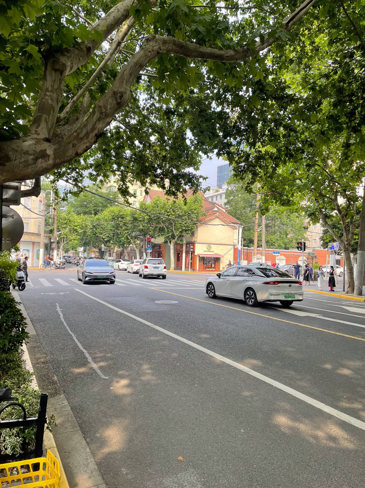
车厢里两小孩的国际象棋对局
上海不愧，让我这个外乡人感到震惊的时刻，没想到来得如此之快。
当我坐在地铁座位上时，看到对面一位大人带着两个刚上完兴趣班的小孩回家。那两个年纪尚小、猜测刚上小学不久的孩子，居然手里拿着一副国际象棋棋盘。落座后，他们缓缓展开棋盘，把棋子一个个摆放到正确的位置上。
棋子能很好地吸附在棋盘上，因此不受地铁晃动的影响。我饶有兴致地观察起他们。毕竟，国际象棋在国内算是相对冷门的棋类游戏，相比之下，中国象棋要普及得多。
两个小孩装出一副认真思考的样子，每次吃掉对方棋子前，都会看一眼对方的脸色，试图判断对方是否有诈。可在我这个旁观者看来，很可惜——他们除了掌握基本规则，其他一概不知。
不过，享受棋局，本就是一件简单而快乐的事。如何高效地赢，终归是长大以后才需要考虑的事。
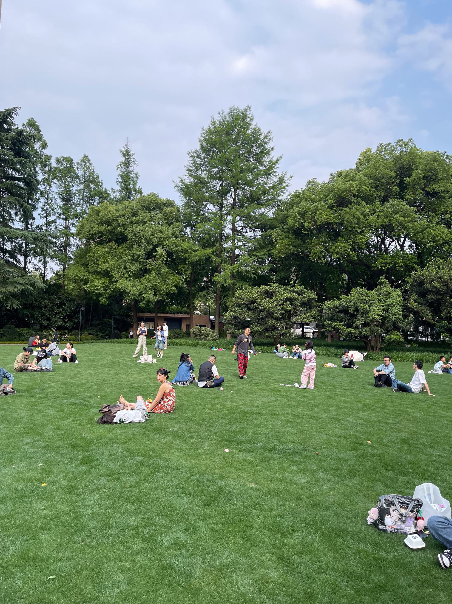
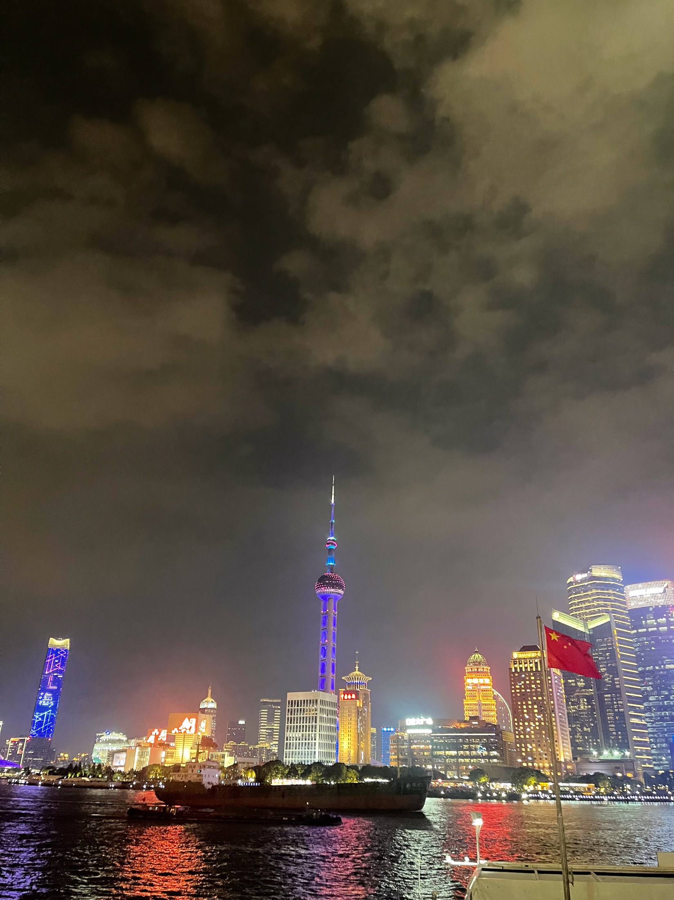
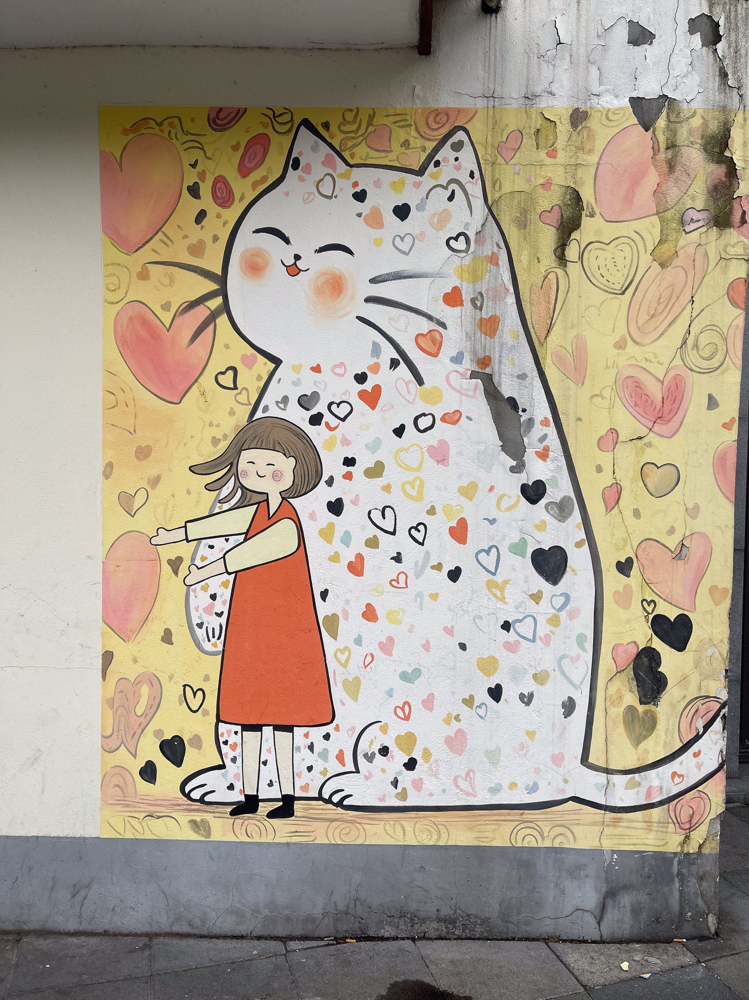
黄浦江夜骑 8 km
不知是何时染上了骑行这个爱好，相比其他交通工具，有时骑行才是自己心目中认识一座城市的最好方式。
既是吃完自助餐后的消食，又是弥补上次前往外滩时所遇的遗憾，这次我跟着"孤独星球"上推荐的路线，准备沿黄浦江边骑行半圈。
过江时，需要乘渡船。
夜晚的九点半我就在二楼的甲板等待，看着身旁和我一样的游客越来越多，直等到十点，船才从码头出发，耗时十分钟便停靠于江边了。
自然，在船上所看到的夜上海，和此前与伙伴同游时没有很大的区别：放眼望去，江边的城市在夜晚显得金碧辉煌，那绚烂的灯光在江中产生了倒影。我不时想到了「拜金主义」，金就在我眼前。
可若眺望得远一些，也是能看到黯淡的城市建筑。那儿只有一两排打着白光，黑黢黢的江水，诉说着上海沉静的另一面。
下了船，在附近找了辆共享单车，骑行才正式宣告开始。
与外滩的打卡点不同，江的另一边游客稀少，偶尔能见到晚上出来跑步锻炼的本地居民。
吹着江边的夜风，一个人悠哉悠哉地瞪着脚踏板，耳机里放着适合此刻欢乐心情的音乐，好不自在。
目的地定在梅赛德斯奔驰场馆，一路上的骑行相当简易，只要跟着专门的骑行道便好。
随着骑行的深入，江边的夜景也慢慢地发生变化：夜晚的霓虹灯逐渐黯淡下来，城市的热闹也渐渐离我远去，待我张望四周，何时我已孤单成了一人。
心境也悄然发生了变化。夜晚的沉寂，让我想起了过去的许多事情。那次四人室友的聚餐，我们还未分崩离析，室友A分享了他刚上大学不久去上海的一次旅行，那时钱不多，凌晨徒步走在黄浦江边，累了就睡在公园的座椅上。
我惊叹那样自由不羁的旅行方式，想象着此刻见到的夜景，会不会和他当时所见的样子一样呢。
由远及近的卢浦大桥，桥身散发着金黄的光芒，底下的游船缓缓驶过。
本想赶着坐最后一班地铁回到江的另一边，可怎么也赶不上了。自此，心情变得更加放荡了。
忍不住拿出手机开始录影，希冀能够传达此刻的心情：哼着小曲，越骑越远，直到和夜上海融为一体为止。
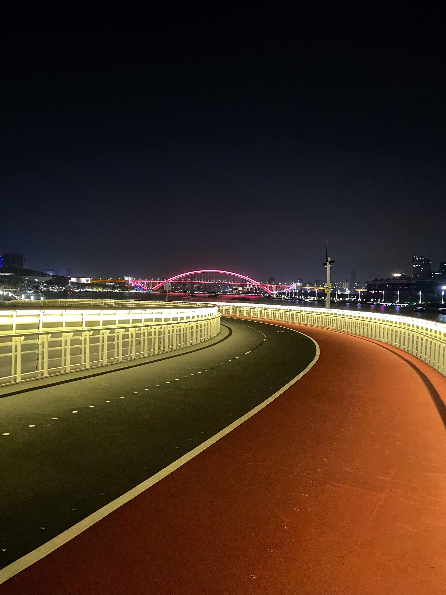
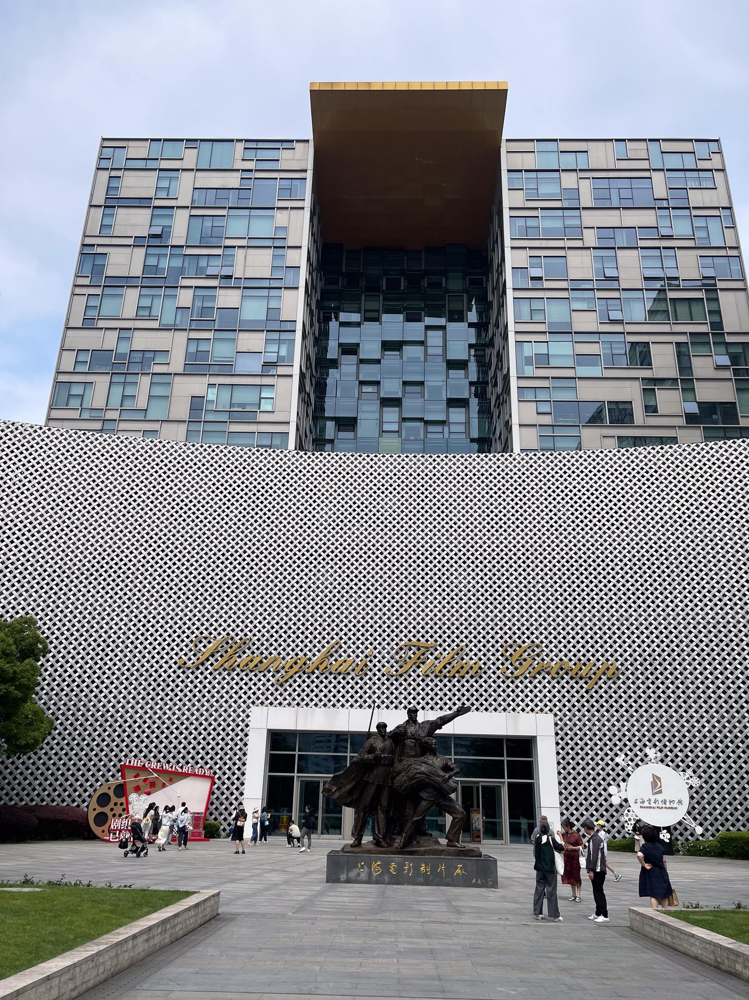
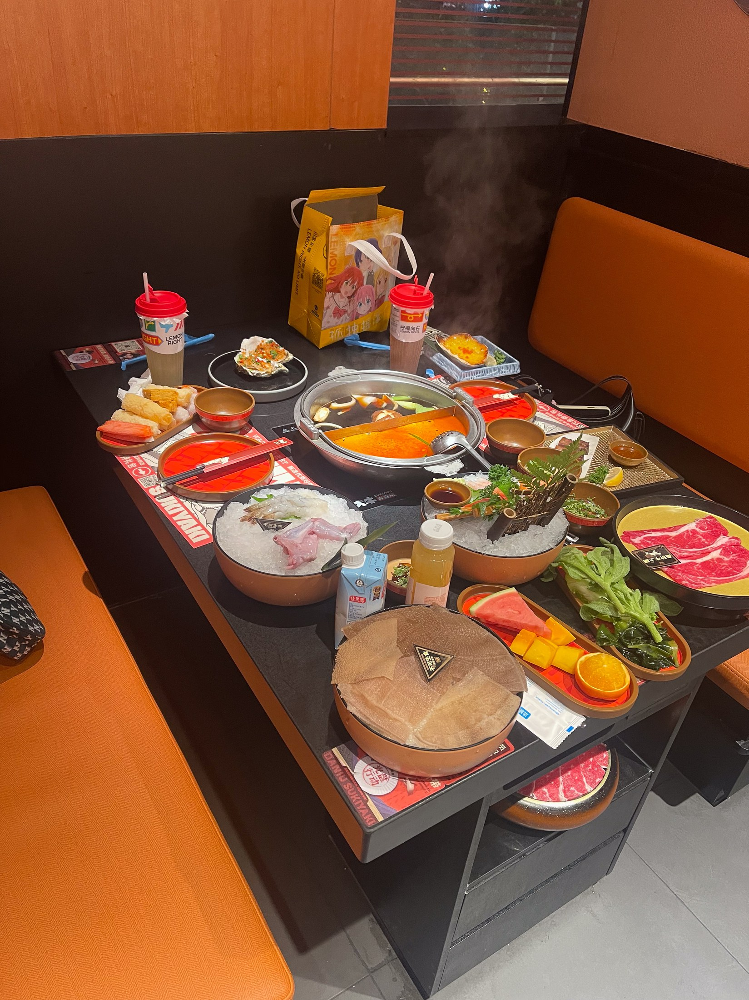
探索美食
穷鬼套餐的红烧牛肉面
到的第一天，放完行李下楼时，已是下午两点。
往前推的四个小时里，我只吃了一根香蕉、一片面包和一杯水，早就迫不及待要吃中饭了。
从地铁站走到民宿的路上，见到的餐饮店并不多。想到晚上还要吃大餐，中午也就随便吃点吧。
一碗 18.8 元的牛肉面：牛肉是预制的，面是现煮的，汤是酸甜口的。所谓"不难吃，也不算好吃"。
但至少填饱了肚子，不至于半路在这陌生城市的街道上昏厥。
网红面包店BASDBAN的原味可颂
和掏粪碰面不久，他就提议去附近一家很有名的面包店，理由是"逛街就应该一路逛一路吃"。
店名叫 BASDBAN，至今我也不知道是什么意思。
不愧是一家网红店，店里店外都坐满了人，门口飘来浓浓的面包香。
店内摆设自由随意：玻璃反光的凳子和桌子，配上略带妖艳的灯光，说是酒吧也不过分。这很符合上海给人的印象——店虽小，却精致。
面包有十几种，看起来都很好吃，但我最后毅然选择了最普通的「原味可颂」。听说要品评一家店的黄油质量，就得从可颂开始。
在学校宿舍对面的「蜂浆可颂」，只要 3 元一个；而这只大可颂，大概能抵得上 3–4 个小可颂。
大概因为刚出炉，可颂还带着烤箱余温：表皮酥脆，黄油香浓。
可惜的是，我本想着此刻吃一半，晚上回去后另一半还可以当作零食，却被伦堡在中途掠夺了，看他大口大口吃的样子，简直是浪费。
四人围坐的日式烤肉
晚上的店，是伦堡女网友推荐的。作为上海本地人的倾情推荐，大抵不会出错。
不过这家店位置偏，负一层入口不易寻找，进去后也不像是餐饮场所，顾客稀少。倒是门外不断重复"想吃烤肉吗？"的小哥很醒目。
说到烤肉，自然想起上次和她一起去吃的那次。每次吃烤肉，我总喜欢看别人烤，然后自己负责吃。
眼前的烤盘挺小的，只正好放我们四人每人一片肉的样子。这样慢吞吞、细嚼慢咽，是我喜欢的进食方式。但一旁de lucky还是提了一嘴，"这不是我想象中的大口吃肉。"
服务我们桌的服务员，态度有些高冷，他基本不怎么对话，我们的要求"能否帮烤"理解起来也很困难。后面我和伦猜测，他本来就性格如此——但这样可不太适合当服务生哦～
烤肉的品质很好，食材新鲜，酱料也符合口味。只是最后一盘的牛排，除了夸张的火焰表演外，吃上去如同烂泥，得到了大家一致的差评。
玫瑰味的饮料还挺好喝的，我却想不起它的名字，听说日料店里很常见，但我此前还真未见过。是叫"马提尼"吗。
PS：店里放的洋歌不错，有 The Weeknd、Bruno Mars，额外给个好评。
厚切猪排饭的碳水，哦依稀!
在空着肚子，参与完全程1个半小时的洗礼后，再乘坐半个小时来到徐家汇，别提那个时候自己有多饿了。
点开手机，对着附近的美食一看，一见到「家乡美食」后，我的目的地便立马确定了下来——我要去吃猪排饭。
这家店开在商场的负一楼，和刻板印象里的日式餐饮店一样，它的空间很小，座位都是紧挨着吧台。要吃什么，跟老板说，然后他就在不到四平米的厨房间开始现做。
我到的时候，顾客只有一位带着女儿来吃中饭的中年男人。他们一起吃着小菜，等待着老板从油锅里捞出来的厚切猪排。
扫了点评上的套餐，印象中是69元。那些小菜很快都上齐了：红色的韩式泡菜，我不吃；两片海苔，当饭前的小零食；加了沙拉酱的冷蔬菜，解腻但不爱吃；放了海带和牡蛎的味增汤，鲜甜可口，餐前餐后各喝了一碗。
直到热乎乎的猪排被端到眼前，心里不自觉地说起日剧里的台词，「我要开动了」，午饭才正式开始了。
猪排很脆， 特别是边角的地方，那里是脂肪和肉的交界处，软绵绵的口感，加上被吸附住的油渍，再配上酱油，最后伴着同样淋上酱油汤汁的米饭，别提有多美味了。
这就是碳水配碳水，日本的灵魂，米饭神吧！想起鲁迪到异世界后，他心心念念的东西，就是它吧。
平日里只能填下一碗米饭的自己，这次也硬撑着多吃了半碗。中饭，在最后几口猪排的细嚼慢咽中，落下精彩的帷幕。
自助餐：四人战斗力的差别
晚饭是和lucky、掏粪和老头，四人组一起吃的自助餐。它位于普陀区，就离住的民宿自行车十分钟的距离。
在我匆忙上交老师布置的画图任务后，于6点半出发，在7点整吃上。
到的时候，除我之外的三人早已蓄势待发，锅里放满了牛肉，桌子上也摆满了待煮的食物，牛肉类为主，还有剥好的虾、鸡肉等等。
我还是有些不适应吃自助餐，一来觉得要是光想着吃回本，吃的就容易不是滋味；二来自己的胃口本来就不大，若是硬撑着，最后难受的也还是自己。
可嘴上这么说，心里也这么想，我这一晚上也还是吃了多少东西啊：吃不尽的牛肉，没有饱腹感的虾，软而脆的鸡肉，有韧劲的牛蛙，不新鲜、口感不佳的皮皮虾，些许娃娃菜，和一杯用旺仔牛奶调的烧仙草。
想象里，这些杂七杂八的东西都放进了胃里，像是在体内做小火锅一样，牛奶是底液，鸡蛋液是调料。
吃到后来，肉已味同嚼蜡，口感甚至跟不上娃娃菜的轻脆。
可其余三人组，却不是像我这样。他们可是战斗力点满的战士，是要上战场，计算和比较杀敌的数量。十盘和牛卷，每盘比头都大，上面的每一卷比手掌还要长。
看着他们津津有味的样子，仿佛肚子里真有个大黑洞，来者不拒。或许这才是吃自助餐真正该有的样子。
不过离开前，我还是为它保留了最后一点纯净：拍了一张刚上锅时的照片。那时，一切都只是准备就绪，而没有下锅。汤颜色纯净，寿喜锅散发着甜味，番茄锅飘着鲜艳的红色。整个用餐期间，只有这个时刻，才存在着这片净土。
迪士尼小镇：泰咖喱与必吃榜西餐
拖着些许疲惫的身体，我们于午后踏进了这家叫「越泰」的泰国菜店。
店里顾客不多，空位随处可见。我们挑选了舒适的沙发区入座。
印象中，我们六人没怎么交谈，只是受着饥饿的驱使，大口大口地吃着。
黄色的咖喱酱料，红色的牛腩番茄酱料，淋在白色的米饭上，就像在画布上涂颜料。
没有拍下具体的照片，但也能够凭着记忆点评一下：咖喱虾味道不错，牛腩堡中规中矩，阴功汤喝不来，烤的鱼一坨大便，烧鸡肉挺嫩，空心菜最为解腻。服务员加水很勤快。
吃完就开躺，身体靠在后座的沙发上，一手抚摸着填饱的肚子，一手拿着kindle，继续看失乐园。恰逢里面主角结束激情的翻云覆雨，就像我此刻般慵懒。
***
晚饭前，我们一行人有过纠结：是提前离开迪士尼呢，还是继续在小镇搓一顿。最后选择了后者，挑了一家「必吃榜」上的西餐店。
小镇上的餐饮价格，和普通商场是同价的，这点必须要给好评；虽然园内的一瓶可乐要将近十块了。
店里环境幽暗，只有少许的灯散发着橙黄色的光芒，并有各式各样的洋文歌曲点缀，绝大部分我也没听过。
入座后，按照点评上的推荐点单：第一口吃下的是酸甜口的意大利面，佐料是奶油和芝士；炸物点的是炸鱼和薯条，味道和正常饭店一样，炸鱼很脆，薯条不吃；蔬菜是夏威夷沙拉，虽然种类丰富，里面还有煎饼，但味道也逃不开普通沙拉的范畴；黄色和酱油色的土豆泥与蘑菇肉酱，是粘稠与粘稠的搭配，味道有些重；记得还有个烤饼，味道也不如披萨；最受好评的是餐前小面包，既热乎又软脆，配上黄油，像是英式早点；
因此，说是必吃榜，但也未体会到其惊艳之处。甚至还招致老头的抱怨，"吃完这一顿，仿佛跟没吃一样。"
不过说到底，这就是西餐吧：不会带来太沉重的味觉消化，一切适可而止。
深夜水果夜宵
回到民宿，看到自己微信步数2w8，位居群友里的榜首时，还是忍不住痴痴地笑了。
可笑归一笑，身体的疲惫感也是真切的。
洗头洗澡、整理今日份的照片、挑选一些放入游记、消费的记账，等这些都做得差不多了，睡觉的时间也就到了。
不过洗澡前还是点好了夜宵水果，凭借着近日的外卖补贴，好好享受了一顿。
若说晚上的烤肉给身体增加了不少的重担，那么这个底层为酸奶、上面放满草莓、芒果、哈密瓜的水果杯，就是让身体变轻盈的道具了。
还没忘点上一斤香蕉，给明日的city walk补充能量。我看，我就是老李头了啊，大赛前吃香蕉的习惯都继承了下来。
漫步与偶遇
独自漫步之愚园路
独自漫步于陌生城市的魅力在于，这里没有一个人认识自己，自己便更容易穿梭在人群中，仿佛随时都能变成另一个人。
在朋友赶来之前，我有大约一小时的自由时光。在这短短的时间里，我带着最强的好奇心，拿起放大镜，观察着上海愚园路的热闹街道。
我看到琳琅满目的精致小店，它们并排坐落在人行道两旁，常常用艺术画作和绿色藤蔓作为装饰。那些画看上去可爱，画中的女孩和猫仿佛在热情地邀请我进店。而那绿色的藤蔓，则为店铺增添了一份自然的气息，让人不自觉地想要靠近。
虽然我没有独自进入女装店，但我参观了时髦的帽子店，店里有只大花猫坐镇，我还给它拍了张照片；还随便走进了一家咖啡店，看着当地人们在午后的闲聊中享受悠闲的时光。
当然，最令我印象深刻的，是在逛完礼品店后遇到的"画像的老人们"。他们看上去大约六七十岁，脸上带着温和的表情，眼神专注地盯着远方的景物，这让我立刻被吸引住了。
这样优雅且充满乐趣的兴趣爱好，让我不禁开始幻想自己晚年的样子。
情不自禁地，我上前和其中一位老爷爷搭话。他正在画不远处的咖啡店，画中的阳光灿烂，绿树成荫，房屋和景物被他用柔和的色彩定格在画布上。
"你好，我能拍下你的画吗？"
他抬头看了我一眼，点了点头，我立刻心中一喜。
除此之外，我还被一块宠物牌子吸引，上面提醒主人记得为狗牵上绳子。果然，经济越发达的地方，对待宠物的态度也越加公开和友好。至少在杭州，我从未见过类似的牌子。
静安寺至 Apple Store的三人行
在下午剩余的时光里，等待 Lucky 与我们汇合后，接下来的项目是三人行的 city walk。
当然，见面时的寒暄是必不可少的。
"哎呀，小智，好久不见了！" 穿着白衬衫的 Lucky 笑道。
"我们才刚在五一野营见过吧？" 我哈哈大笑回应。
***
我们从愚园路的告示牌出发，目的地是两公里外的静安寺。
与同伴们一同前行的好处是，可以分享所见所闻。虽然我感兴趣的，他们未必也有同样的兴趣，但归根结底，我们是同性，异性总能成为话题。
印象最深的是，看到一位穿着较为暴露、屁股的红裙上写着显眼的"FUCK"字的女士。
我们嘻嘻哈哈，跟随 Lucky 的"天眼导航"，有意无意地跟着她走了一段路。
最后来到我们的终点 --- 一块坐落在城市中心的草坪上，在那位女士和同来的同伴坐下后，跟随就不了了之了。
不过我们也是没有白来，受到草坪上悠闲氛围的感染，我们席地而坐，让暴走的双脚闲置一会儿，同时观察起周遭的环境。
一对毫不在意、对着手机嘻嘻哈哈跳舞的两姐妹；一位扮演狗熊，和三位孩子玩耍的外国父亲；奔跑的男孩女孩。
最让我关注的，是那位玩的很开的父亲。他体型庞大，可自身也像个孩子一样，和孩子们打成一片，四脚朝天，做出搞怪的动作。似乎，在他们眼中，小孩子们的开心笑容，远比身为父亲的自尊心重要得许多。也因此，他们才会丝毫地不介意，偶尔露出内衣的颜色又如何，偶尔出点公众的丑又怎样。
我总是对这样的精神感到敬佩。同时羡慕这样健康长大的孩子们，他们会赞叹父亲的高大的同时，也会像朋友一样接纳他吧。
***
沿路的其他风景，也大致交代一下。
我们进了上海最大的苹果店——Apple 静安寺，依旧是苹果一贯的设计感。在这里，我体验了 AirPods Max，惊叹它的降噪效果，仿佛隔绝了整个现实世界。
我拍了一张理发店外面的 barber 画像。画画是上海特别喜欢与商业结合的形式。
路过静安寺，但因为时间关系，没能进寺庙，只是在外面简单欣赏了建筑外观。顺手拍了附近的高楼大厦。
去草坪的路上，我们遇到了上海大爷大妈的本地路演。这里有用锯子奏乐的大爷，也有在街道中央配乐跳舞的老年夫妻。最让人惊叹的，是一个富有节奏感的老年队伍，他们放着洋歌，敲着锣鼓，动作和节奏感十足，跟着动次打次的节拍，我不自觉地也开始随着他们的节奏摇晃。正是这些最有特色、演得最好的老年人，吸引了最多的观众，周围聚集了很多人。
偶遇法国人天主教洗礼
慵懒的早晨，是从上午睡到自然醒开始的。
手表显示此刻是十点，洗漱、整理背包，一个独自旅行的男生，不到十五分钟就能整装待发。
早餐的内容是昨晚点的水果夜宵，嘴里塞两根大香蕉抵腹，积攒的饥饿就由中饭解决。
今天上海的天气很好，外面是一片晴朗的天，太阳被云层遮挡。简直再适合出行不过，旅游的心情即刻也就准备好了。
"去哪里好呢？" 一边骑着共享单车，一边看着手机上的旅行指南，"还是去徐家汇吧"。
决定好了，就向地铁站出发！
可刚骑了不到几百米，我的目光被一座教堂所吸引。教堂外形呈尖塔状，规格不大。
在我的印象里，周日的教堂是给教徒做礼拜的日子，往往不对外开放。可我见到的这座，此刻却大门敞开，依稀能见到里面华丽的吊灯装饰。
一位光头、穿着西服的男士拎着袋子，跨着台阶，向它的内部走去。
我的好奇心一下就被调动了起来，心里有预感，这将又会是旅行上不可多得的偶遇。
我跟着进到内部，沿路没有受到阻拦，看来今天的确是对外开放的。
教堂内部的风格和我见过的其他教堂并没有很大的区别：五彩的玻璃窗，上面画着圣经里的故事场景；左右两边垂放着画像，常见的有圣母像、受难的耶稣等等；教堂的正中央，放着一座城堡外形、散发金光的祭坛。
台上有位穿着豹纹裙饰的女士，在步道的讲台边，对着麦克风轻声歌唱。
左侧有一对模样看上去是父子的人，父亲吹着乐器大号，孩子吹着小号。
此刻的来宾不多，只稀稀拉拉地坐了前三排。每位男士都是西装笔挺，女士则优雅端庄，说着我听不懂的法国话。
我茫然四顾，首先想到的是想找个中国人问问，这里是在举行什么仪式，能否旁观。
我走向一位显然是主持人的中国男士，他此刻正在用流利的法语和宾客们问好。
"你好，请问这里是在举办什么仪式？"
"一会儿在这举行法式的洗礼。"
我还没问完，他便从我身旁略过，招待新来的宾客去了，留我一人。
不过既然没有赶我走的意思，我就当洗礼的见证人了。此前只在小说里听过洗礼的概念，可现实中从没看过完整的洗礼呢。
拿起放在椅子上的过程手册，除了用数字标记的日期外，其余的法语一概不懂。翻开后的内容也是，但能看出是几首歌词，等会儿合唱时会用到。
洗礼的基本礼仪也应该学一点，当下就全靠GPT临时抱个佛脚，没想到它立马纠正了我犯下的错误：当我正想在空余的第四排入座，才知道前排都是关系紧密的亲朋好友的位置。
不过入座时，一旁坐着一位中国姑娘，她穿着白色的衬裙，背对着我，背后的长发用发箍绑在一起。
些许犹豫后，我向她搭话。
"请问你也是来参观这次洗礼的吗？"
听到声音，她向我转过身来，我这才看清了她的正脸。她带着黑边眼镜，眼睛张的很大，额头上的刘海乱糟糟的，脸上挂着诡异的微笑，一句不语。
那副模样，让我莫名联想到《闪灵》里那位拿着斧头要砍人的疯人兄弟，吓得我立马离开了座位，在过道后面一排坐了下来。
在后续的观察中，发现她也不认识在场的所有人，只是在前排坐着，保持着一个姿势笑着，好一个怪人。
宾客陆续赶到，当我下一次回头，看到不大的教堂里，连最后一排都已有人坐下。坐在我后面一排、一位将近七旬的老头向我询问，
"你知道这里在做什么吗？"
"一会儿要举行洗礼。"
这次是我重复已知的信息。
"那什么时候开始呢？"
我摇了摇头。搭话完，他移到位置的角落，和过道旁与他年纪相邻的老太太闲聊起来。
人多了之后，交谈声变得热闹了起来。坐在我正后方的，是两位模样看上去关系母子的女士。
女儿年纪与我相仿，在轻轻地和母亲交流。
"要是我也会法语就好了，" 我心想，"说不定这样我就能和两位女士搭话了。"
不过这样的心情并没持续太久。在音乐奏响之后，我的注意力就完全被台上的女士吸引了。
洗礼正式开始。
高亢的嗓音，洋溢着幸福的微笑，光是听这位女士歌唱，我已觉得不虚此行了。
更何况，除了宗教的歌声之外，还有一旁吹着大小号的父子，他们配合着声乐演奏，认真和默契的模样闪闪发光。
还有一位躲在钢琴后的孩子，年纪个头很小，完全被钢琴遮挡了视野。
钢琴、管弦、人声，这三重的音乐演奏，虽没有专业表演团来得隆重与恢弘，但它更像是一场亲密的家庭聚会，此时聚会上亲朋好友正在献曲歌唱。
情到深处时，台下的观众们也会轻轻地和声跟唱，打着节拍，在结束时热情地鼓掌。
我虽然不懂他们交流的语言，可她们洋溢着幸福的神情、周围和谐友好的气氛，我总觉得我能体会到跨越语言的感情。
只有经历过才知道，宗教音乐在这样场合的魔力为何。是祝福、欢乐和感恩，这三个最淳朴和美好的感情，融进干净和纯洁的乐曲当中。
为此，我特别感激那些不曾相识的表演者，即使在仪式结束后，也不肯离去。
音乐的篇章一页又一页地翻过，它们大多来自圣经的某一章节，我只能勉强分辨里面"Jesus"的含义。
在唱了两三个曲目后，一旁化妆间的门被打开，身着纯白衣服的孩子们走了出来，他们看上去六七岁的光景，笑着看着各自的爸爸妈妈。
在绕教堂一圈后，他们走到了祭坛边，和完影后，剩余的时间就坐在祭坛上。
更多的音乐，偶尔伴随着起立宣誓，这过程长达两个小时。在教徒领取圣水后，仪式才正式宣告结束。
眼睛被其中一位美丽的法国女士吸引，她身穿咖啡色的衬衫和短裙，套了一层透明的、点缀着黑色蝴蝶的薄纱外套，茶色的长发，脸上总是流露着愉悦的神情。她上身没穿内衣，能见到凸起。
漂亮的还有一位姑娘，她跟着父母和妹妹一同前来，坐在我的正前方。她的模样像位公主，身着长裙，有着精致的五官。
包里的两根香蕉一直没机会吃。当我走出教堂，正午的太阳崭露头角，我一边吃，一边向地铁站走去。
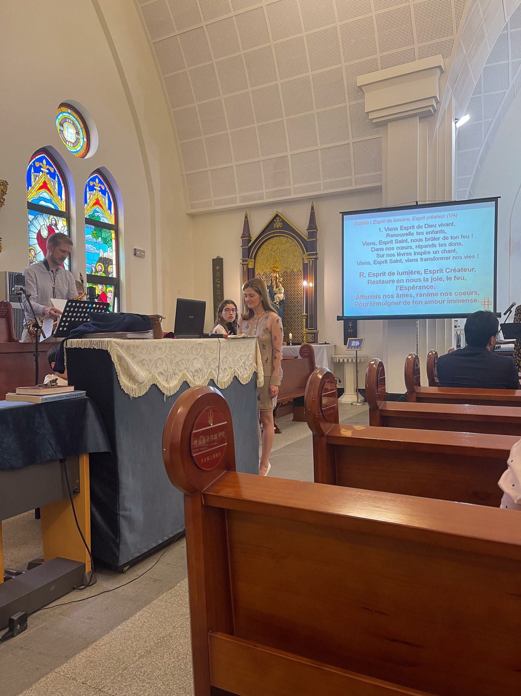
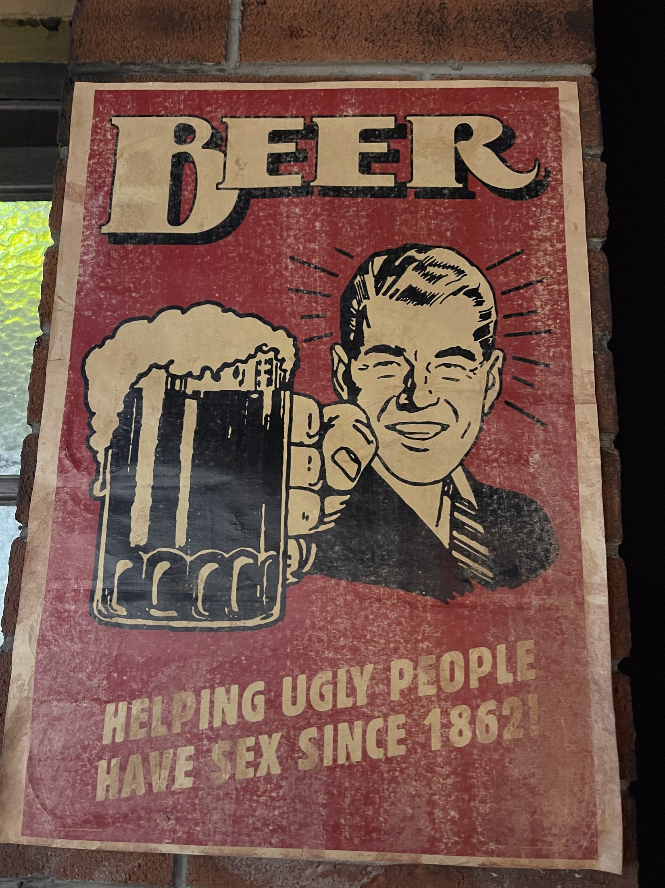
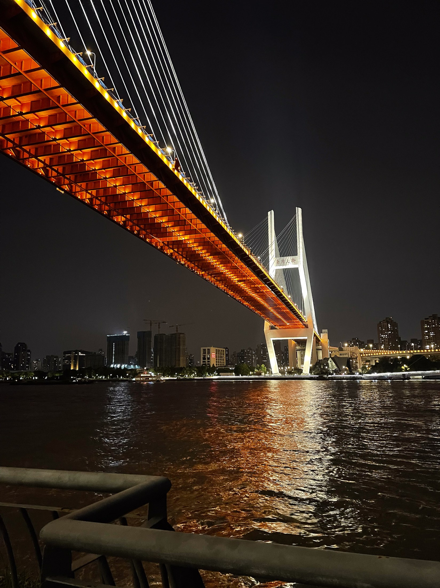
被打断的上海电影博物馆
向外宣称"自己是个爱电影的人"，那么这家离徐家汇站不到 1 公里的上海电影博物馆，理应是必须打卡的项目之一。
然而，实际上我并不是特别喜欢逛博物馆的类型：那些充满历史感的作品，我很难欣赏它们的艺术底蕴。
门票 68 元/人，稍微有点贵。
从顶层的四楼开始游览，走过模拟颁奖的红地毯，进入展厅，就能看到一面墙，上面挂着老一辈中国演员们的画像。
七八十年代的中国电影，我并未涉猎过多少，那些经典也没来得及看，墙上看到的自然都是些陌生的面孔。
展厅介绍的导演，因为不了解，快速略过。唯一读过的作品《雷雨》，还是一个月前看的。
下到三楼，展示了五十到七十年代的更多影视作品。那段时光如此遥远，如果不是对刚成立的中国充满浓厚兴趣，怕是我不会专门去看。
那里有上世纪的《电影时代》杂志封面，上海女性丰满且肉感十足，吸引观众的眼球。对影视作品里的裸女感兴趣，似乎是亘古不变的道理。
昨晚睡前，我被老师拉进了一个不知名的群聊。虽然一夜过去，群里没有发出任何消息，但它就像漂浮在头上的乌云，不知何时会下起骤雨。
我到二楼看了介绍上海电影发展历史的影片，感觉有些粗制滥造。
转悠了一圈，熟悉的名字也就张爱玲和《色戒》。这两者也只是听过，却没有看过。前者听王小波点评过，记得给它留下了不太好的印象，太忧郁；后者想看却一直未看，只略过其中闻名的性爱镜头。
乌云的正式降临，是在下午两点四十五分。来势汹汹，老师希望全员三点在线集合，布置申请项目上的分工作业。
我躲在卫生间隔间里，望着外面周日的大好天气，不禁感叹：该来的总会来。
听会的过程中，又新生了一重烦恼：明天是迪士尼的重头戏，我还没向老师请假呢。看这项目，似乎不像一两天能结束。
找理由当然不太靠谱，但又不想撒谎，硬着头皮用了家里人生病的理由，表示明天不会在杭州。奶奶最近确实生病了，父母希望我回家一趟。
这样才总算搪塞过去。
接下来的时间里，本就不多的游览兴趣，也被赶回酒店干活的心情彻底榨干。
不过，心情并没有想象中的那么坏，为了明天的欢乐，我愿意做出牺牲。
外滩打卡的失落
吃完烤肉，在伦堡徒步的建议下，我们向外滩走去。
其实，下午的漫步后，我和 Lucky 都有些疲惫了，走了快 1.5 万步，然而前程漫漫，外滩距离我们还有将近 3 公里，真是有苦不出。
伦堡带头走的很快，几乎没有停留，因此我们也没时间细看沿路的商店。
记得有一次我本想驻足看看一家商店外面的展示柜，里面放了张风景画还是精致的蝴蝶什么的，现在有些记不清楚了。只记得有个外国的老头拿着古老的手机，被深深吸引，停留在柜前拍照。
我要是多看两眼，怕是连伦堡他们人都见不到了吧。
终于走到外滩，上了台阶。lucky指了指江对面:"喏，那就是外滩。" 让人不禁想到巨人里的名场面。
只见以上海东方明珠为中心，灯火辉煌的建筑群熠熠生辉，缤纷的霓虹灯在黑暗的江水中投下了倒影。
游客几乎占满了整个通道，都挤在围栏旁拿着相机或手机拍照。
我们一行人也懒得加入拥挤的行列，只是看了两眼，就离开了。又是lucky的锐评，
"外滩就是给外地人来的打卡点，本地人从来不去的。"
下了台阶，情况也没有乐观到哪里去：哪哪都是人，除了闪耀着金黄色光芒的建筑外，也没有别的观赏项目，何况脚底越来越疼了。
宝贵的休息只有一次，那是坐在路边的台阶上。我看大伙精神都挺涣散的，tf看起了lol比赛，lucky和伦堡看起了炉石。
十分钟眨眼就过去，我们又往和平饭店出发。
就看了饭店的门面，拍了照，算是来过了。街道两旁的景象，现在已经遗忘得差不多了，只记得人山人海，让人想起周末的湖滨银泰。
本想去逛lucky提议的二次元手办商场，可耐不住心累和脚累，就早早地打道回府了。
总体来看，逛个外滩好像只留下了失落这一个感觉：毕竟是充当一个外地打卡者，和周围的游客们没有任何区别，只是被建筑的外观吸引，却对其中一无所知。
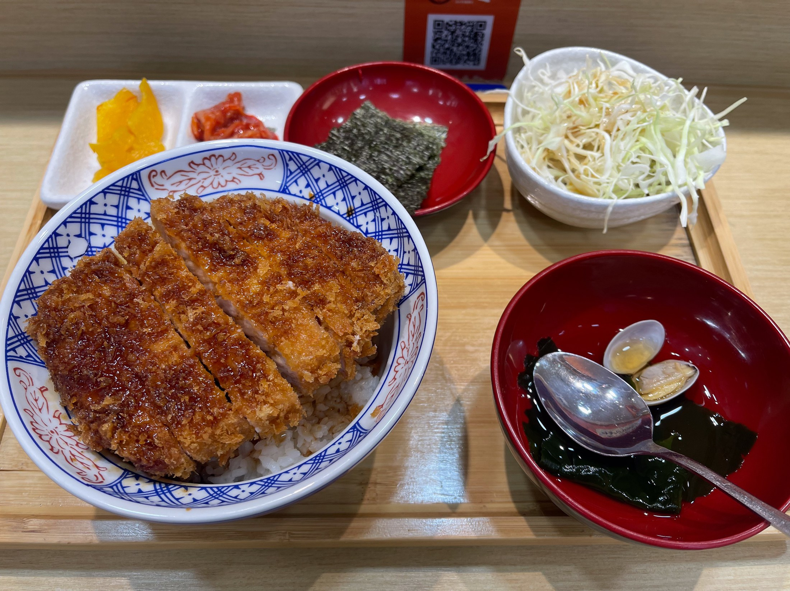
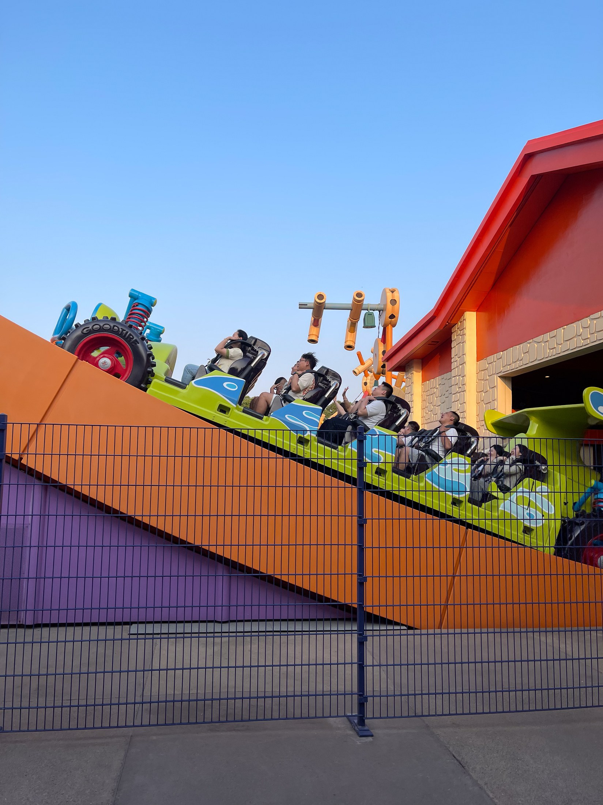
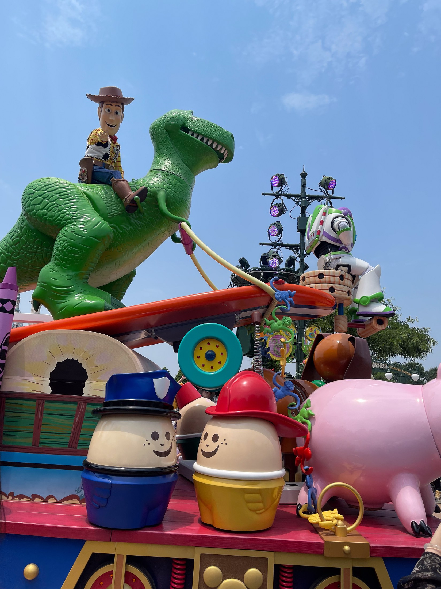
与上海出租车司机的闲聊
嘿嘿嘿，这次和司机的闲聊，我还用手机录了音呢。
每次到一个地方旅行，最容易搭上话的，就是当地的出租车司机师傅了。
绝大部分情况下，面对游客时，他们相对活跃；而作为游客的我，也能从他们口中了解当地的生活。
整个旅行，我只打过这一次出租车。这次也是迫不得已，在黄浦江的另一边刚骑完车，地铁和船运在深夜的十一点都停掉了。
我们的对话，是从手机里开始的。我接到电话，电话那头传来的是一个中老年男性的声音，
"你好，请问你的定位准吗？我怎么没看到你。"
"啊，我就在你的前面一百米的地方。"
"你确定吗？要不你走过来吧。"
定位明明显示车就在后头一百米，可这司机不想开过来，一定让我走过去。
上了车，我从原因问起，开始了闲聊。
"师傅你咋不开过来呢？"
"哎呀，你们打车的基本对位置不怎么专业，很多话信不得。我要再往前开，方向错了掉头就很麻烦。"
说得似乎不无道理。
搭话时，表明游客的身份很重要，这是开启话题的第一步。
"哎呀，我这次来上海玩。江这边好安静啊，跟外滩那边完全不一样。"
"你这都走到哪里了。" 他看着车里的反光镜，打量了我一眼，"什么，一个人来上海旅行啊，看你这模样，还在上学吧？"
学生的身份往往也很便利，会让人觉得是身处象牙塔，对社会不谙世事的形象。这次是师傅主动问起了，
"你什么专业的？今年大几了？"
"计算机，最近刚读博士呢。"
似乎是戳中了他哪个兴趣点，听到"读博"他很来劲。
"我女儿十年前上海硕士毕业，读的化学专业，现在都当上企业的高管了。"
原来是一番炫耀啊，有个读书好、事业有成的女儿。他继续输出他的观点，
"现在的博士啊，根本不上以前的，你现在读出来，能混上高管吗？位置早就被占掉了。"
这我也不是不明白，随着内卷，学位的价值也越来越低，评判标准逐渐向个人能力靠近。
"等你二十七八岁读出来，出去工作两三年，又要开始着落成家立业的事情。"
"这我就得跟你说了，人嘛，三十而立，古时候的话肯定有它的道理。三十岁，要有稳定的事业，建立家庭，这样才能说一个男人能立于社会上。"
没想到，这位师傅话还挺多的，竟这么喜欢好为人师。看他的年纪，想必也读过一点书。
"结婚是必须的，男人缺不了女人，那方面的事情是一定要干的。"
那方面，哪方面，我可以天真地追问吗。不过看他如此直言，也就作罢了。
在整个搭车的二十分钟里，师傅一刻不停地分享他的见闻和观点，我负责随身附和，鼓励他说下去就好。
车开到了此前骑车望见的卢浦大桥。夜深了，江边的城市迎来沉睡。可此前看桥的兴致，此刻却离我有些遥远，我无暇顾及桥上的风景，而是饶有兴致地继续听下去。
"这我就得跟你说了，看你读的专业是计算机，我有个喜欢自学计算机的侄子，我给你讲讲他的故事吧？"
明知故问，我自然地点头，用"嗯"回答。
"我这侄子本科毕业，先在一家互联网小厂企业工作，但觉得工作强度太高，他跳槽到了一家外企。"
"外企虽然工资也就那样，但工作时间少了很多，我这侄子平时就喜欢自学计算机，工作之余会钻研技术。"
"有一天，他去面试了美国的一家企业，线上面试的。总共15道题目，解答时间为10天。"
"你知道如果拿到这个工作，年薪是多少吗？"
我摇了摇头，甩给他"五十万"的答复。
"年薪至少百万起步。每道题目都很难，但他最后答对了12道，排在前10%，顺利录取了。"
"现在他已经移民香港了，工资肯定又翻了好几倍吧。"
除了上述的故事以外，司机还涉猎了"礼仪"的方方面面，职场的 — 怎么倒酒，生活的 — 怎么走路，怎么打理等等。
照这般讲下去，一个小时都不够他说的。生活是一本书，按照他的年纪，短时间内我是读不完的。下车时，他有些意犹未尽地说了慢走。
至于我，当我睡前回顾今天的行程时，脑子里不时会冒出这位司机的话。至于其可信度如何，还是交给每个人自行判断吧。
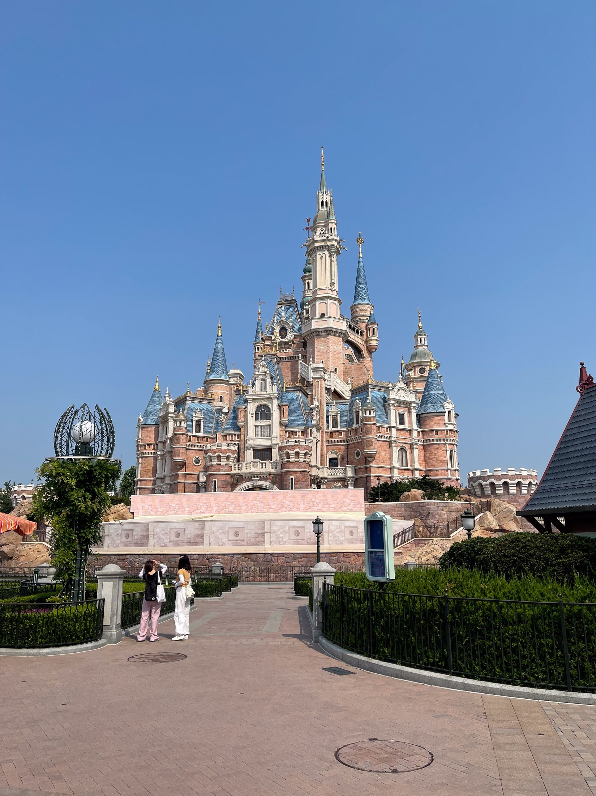
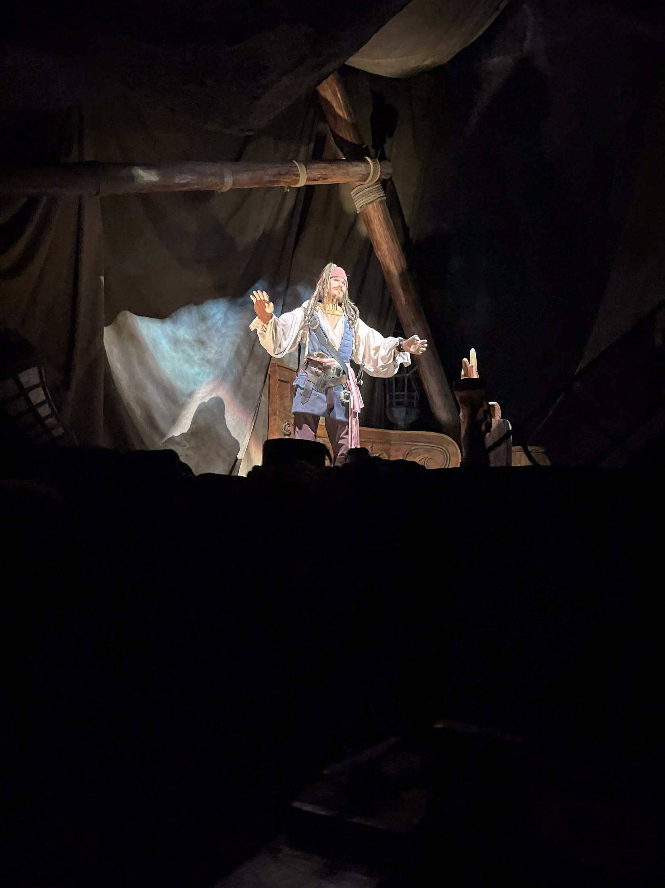
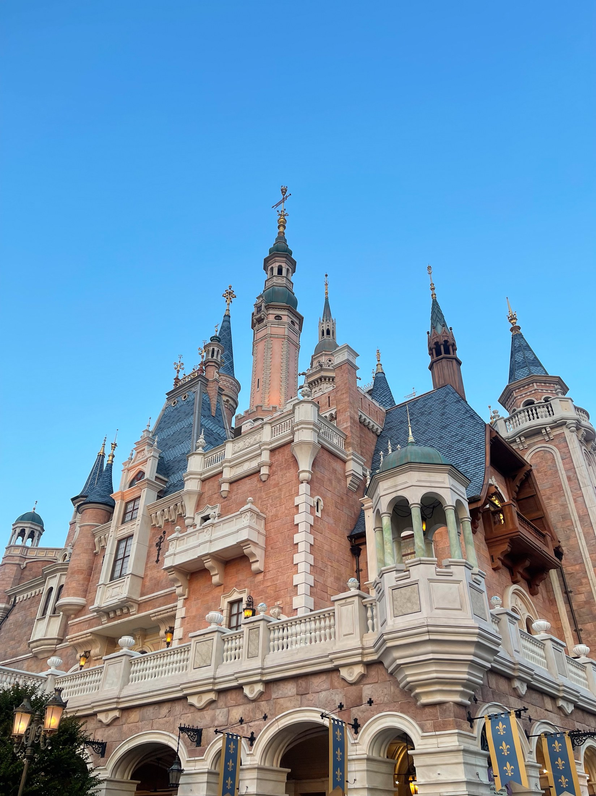
重头戏
白天的迪士尼
每当我被姑娘清凉的夏装所吸引 —— 离我不远处的女孩此时穿着粉红色的衬衫，黑色的短裤，开口的衣领，露出雪白的大腿，我就会回想起和兄弟们一起去迪士尼乐园的日子。
好吧，写完开头，就不知该怎么接着写下去了。
相隔了一个月的时间，留在脑海里的记忆已变得有些模糊。
只记得出发前一天心里的担忧 — 我们商定时间的方式是如此随意，真怕有人睡过了头，告吹了计划。
但现实并不坏 — 那天天气晴朗，我们九点排队进场。
迪士尼乐园，这里是个什么地方？
问过周围的朋友们，特别是女生，那是一个一定要去的浪漫之地，是一个要打扮得漂漂亮亮，搂着男友的手臂，脸上绽放着灿烂的笑容，在西式的钟楼和城堡下留下美好回忆的地方。
那对我们这群罗汉、里面找不出一个姑娘的人来说，这样的浪漫能意味着什么？
答案或许是欣赏好看姑娘并悄声评价的下头，或许是享受游乐项目的纯粹，又或许是与浪漫无关的友情。
"好热啊，这上海怎么会这么晒。" 被话语里浓厚的台湾腔所吸引，我转头一看，后面是同在排队的五位姑娘。
我停下了手中《失乐园》的阅读，想确认她们是否真的来自台湾。
吼叫的牛头警长，墙壁上的小兔和狐狸警官，疯狂动物城的经典角色不断在我们眼前略过。我想起了头像同是兔子的她。
她们肯定是来自台湾的，真想试试和她们搭话。心里虽这么想，但身体并没有采取行动，一次面对五个人难度还是太大了些。
"这我之前也来过。" 站在我身旁的掏粪，指了指戏剧舞台上此时咧嘴大笑的海盗，口中说道。
又是一场演出，上午是在排队和看演出中度过的。
所有的演出中，我最喜欢的正是「加勒比海盗戏剧团」。它由真实的演员表演，整体轻松幽默的气氛，还有偶尔的演出特效作为惊喜 — 空中的滑翔锁链、让人浮空的喷气。
不赖。
烈日当空下，主干道的两旁拥满了人群，我好奇地观察着他们迫不及待的样子。
只见由五位穿着制服的舞者带领，后面跟着浩浩荡荡的队伍 — 站在大型玩具车上的米奇老鼠，在城堡顶端、有王子侍奉的白雪公主，徐徐开过的托马斯小火车，伴随着欢庆喜悦的音乐，开展了一场大型的游行项目。
受人群激昂的气氛鼓动，我们饿着肚子也要把这场游行看完。
道路对面有位穿着短裙的漂亮姑娘，她紧靠在男朋友的身边，脸上是神采奕奕的幸福模样。
我身旁站着两位异国女性，她们拿着旧款的iPhone手机录影，收敛不住脸上的笑容。
朋友篇
当yd领到别人赠送的雨衣时，他笑开了花，"连谢谢都没说，世上竟有这样的好人。"
这件雨衣后来被用来保护lucky的包包，里面放满了相机，是整个漂流中最有价值的物品。
那坐在橡皮艇开口的我就没那么好运了，在激荡的水流中，它浸湿了我的后背。
同坐在艇上的还有一对父女，小女儿披褂着雨衣，一副闭眼害怕的样子。yd坐在她身旁。
在和父亲的闲聊中，yd提议她可以身体靠前，他可以帮忙稳住摇晃中的她。yd得到了父亲的感谢。
下了艇后，雨衣在yd手中传递到了下一位陌生人的手中，他又一次面露笑容。
***
什么时候能再次见到lucky坐在摩托车上的帅气模样呢？
只见lucky双手紧握把手，盯着前方妖冶的红蓝光赛道，身体前倾，像是要骑马打仗一样。
不过，第一排的飞车体验和打仗无异，速度快得睁不开双眼，在高速运动中天旋地转。
"就这还算有点刺激性吧。" lucky嘴角微微上扬，跳动身体，这是他的经典姿势。
***
"哎呀，这个很快就过去了的，这你真的不玩啊？" 我们一群人站在海盗船的门口，正努力劝说apate。
apate站得远远的，似乎早就意料到会有这么一出，提前保持了相当的距离，留个背影，甩甩双手拒绝。
"不知道这一个小时他又会去哪里鬼混。"
船荡到了最高处，向下的俯冲带来强烈的失重感，身体正要兴奋时，船却不一会儿就蔫了，失望。
apate坐在椅子上，重又加入了我们的队伍。
***
左手拿着的是一只躲在萝卜里的兔子玩偶，蓝白配色的身体，搭配橙黄色的外壳，除了眼神有些空洞外，其余都挺好的。
拿在右手的是一只米色栏框里的小松鼠，棕红和毛茸茸的身体，外型像卷福饰演的福尔摩斯，全身散发着智慧的味道。
"有钱你就都买了。" 掏粪看着我犹豫不决的样子，随口建议道。
我喜欢米色的松鼠，但收礼物的她显然会更中意蓝白的兔子。
"还有啊，我建议你也别拍照询问她喜欢哪个，她多半不会接受的，你要当作惊喜送给她。" 掏粪好似看透了我内心的想法，我总会在这时显得犹豫。
果然现实如她所说，她婉拒了礼物。不过，在后来的见面中，我把礼物送给了她，那只兔子玩偶就永远地挂在了她寝室的墙上。
烟花的尾声
当烟花在夜幕中的城堡上方绽放时，lucky、掏粪、老头、yd、apate和我，我们六人站成前后两排，一齐看向夜空。
那里一束束的烟花在空中炸裂，像星星一样散发着耀眼的光芒，随后从天而降，消失在了看不见的地底下。
我们今天的迪士尼之旅，也像烟花一样绚丽多彩 — 总功臣、发出邀请的lucky，翘班请假而来的掏粪，有着摄影特长的老头，暖心负责任的yd、胆小如鼠的apate，以及负责记录一切的我。
但看着烟花消逝，不免生出伤感——不久后的我们将各奔东西，工作后再聚更难，且行且珍惜吧。
附录
花费记录
3天花了2k，还不包括迪士尼门票，还是挺高的；这就是上海的物价
行程安排
请参考pdf文件